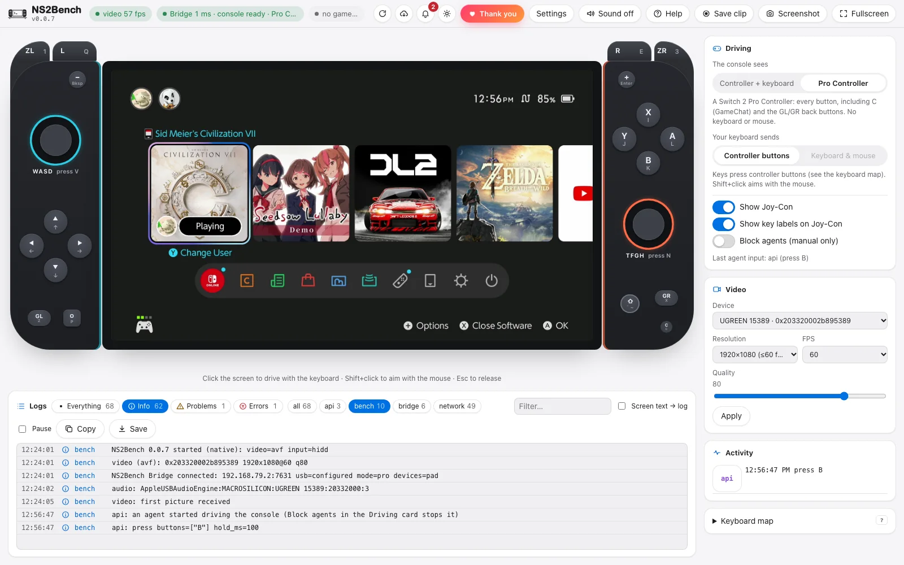
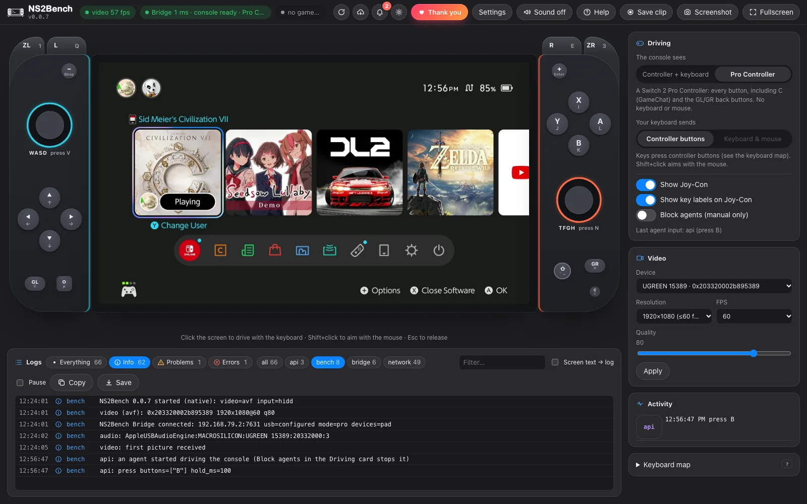
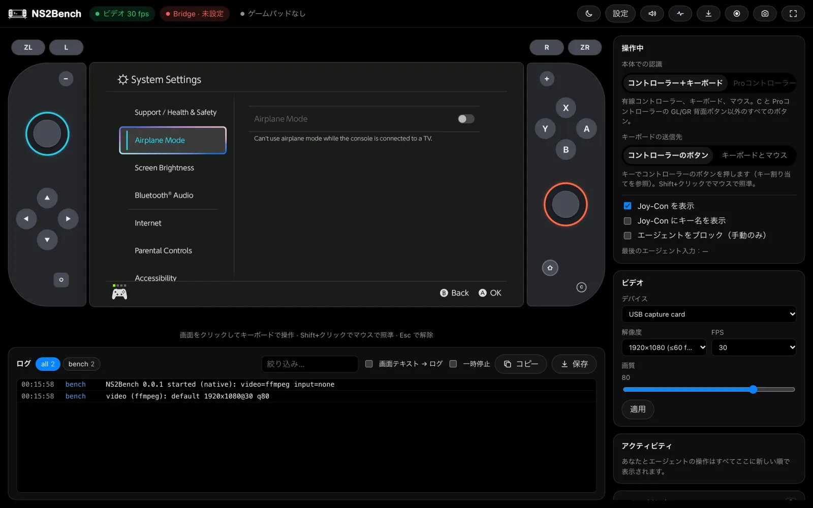
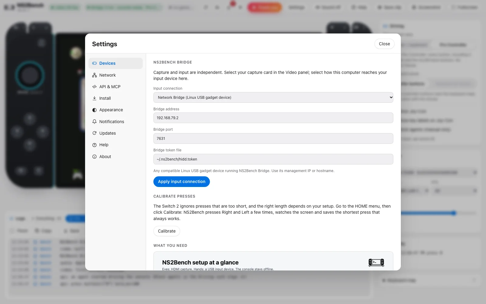
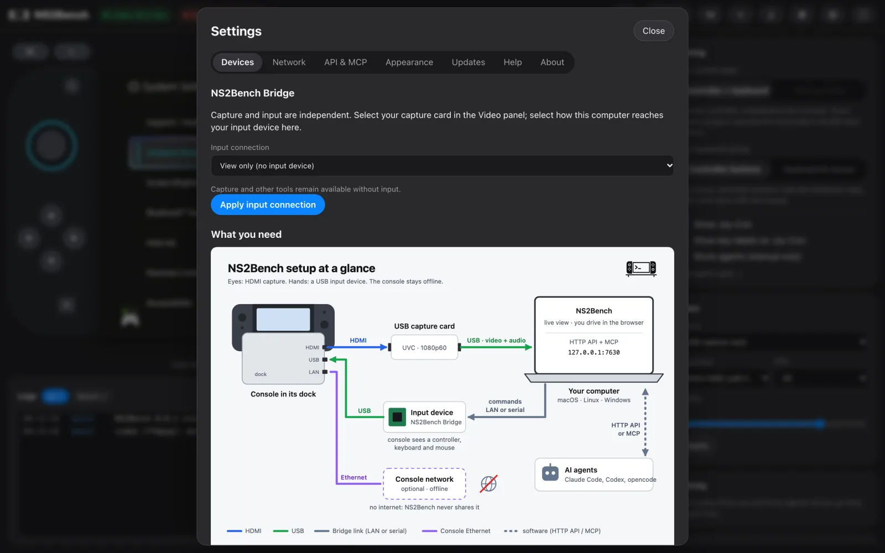
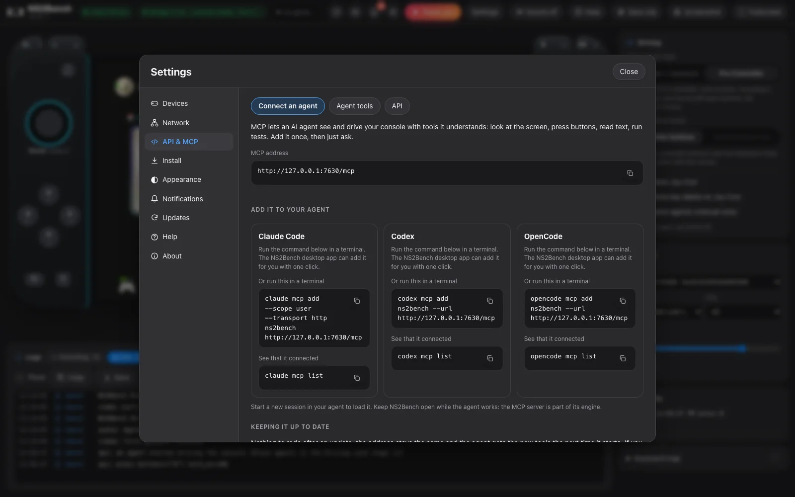

See and hear
1080p60 video and sound from any USB HDMI capture card. Screenshots, 30-second clips and on-screen text reading. On macOS it shares the card with OBS.
Free and open source · v__VERSION__
By hand or by AI agents. Live video and sound, keyboard, mouse and gamepad input, and repeatable tests. The console stays offline.
For macOS, Windows and Linux. You need a USB HDMI capture card; an input device is optional. No jailbreak needed: works with any Switch 2, stock or jailbroken.


What it does
Everything a TV sees and a controller presses, on your computer. Nothing is installed on the console and nothing is uploaded.
1080p60 video and sound from any USB HDMI capture card. Screenshots, 30-second clips and on-screen text reading. On macOS it shares the card with OBS.
Keyboard, mouse or your own gamepad, through a small input device on the console's USB port. On-screen Joy-Con light up with every press.
An HTTP API, an MCP server with 34 tools and a command line tool. Agents can wait for the screen to react and find text on it. You see every agent action live, and one switch blocks agent input.
Repeatable JSON tests with screenshots and a clip of the moments before any failure. Logs say what went wrong and what to do, and notifications tell you when something needs you.
An optional console network answers only the connectivity test. No forwarding, no NAT, no internet, and that can't be turned off.
Light, Peach, Dark and OLED themes, text size and accessibility options, and 11 languages. Free and open source under the GPL-3.0 license.
The app looks and speaks the way you like, and remembers it.

Pick the capture card and the input device in Settings. The doctor checks every part and tells you what to fix.


How it connects
The console's HDMI goes into a USB capture card on your computer. For input, a small device plugs into the console's USB port. Pick the one that suits you.

Luckfox, Raspberry Pi Zero 2 W, Pi 4/5. Every button, including C, GL and GR in Pro Controller mode. Keyboard and mouse too. The app installs it over SSH.
Setup guide →The cheapest controller option, with a 3.3 V USB-to-UART adapter. Keyboard and mouse too. The app flashes the firmware for you.
Setup guide →A keyboard and mouse for the console, no controller.
Setup guide →Just a capture card: watch, record, take screenshots and read text.
Setup guide →For AI agents
The MCP server is built into the app. Add it to Claude Code, Codex, opencode or any MCP client, then ask your agent to open a menu, read the screen or run a test, and watch it work.
claude mcp add ns2bench -- /Applications/NS2Bench.app/Contents/MacOS/ns2bench-app mcpSettings → API & MCP in the app shows the exact configuration for your computer. Tools and HTTP API.

The newest release for every computer. The app tells you when there is a new one.
Optional, for driving the console
First launch on macOS or Windows may show a warning: see the FAQ. Windows and Linux also need ffmpeg: the setup guide shows how.
NS2Bench is free and open source, made by PhantomPtr. A coffee for me, or tokens for the AI that writes the code, keeps it going.
Card or PayPal, once or monthly
The easiest way: a coffee, or whatever you like. It pays for test hardware, capture cards and the next release.
♥ Support on Ko-fiStraight to my hardware wallet

Bitcoin
Network: Bitcoin
bc1q36gxkvd3wfxy9azm8hft3rru9m6m9hjvn7u20n
Send only BTC on the Bitcoin network. Anything else can't be recovered.
No destination tag needed: this is my own wallet, not an exchange.
Please support the people behind the tools you use too. Thank you, all of you.